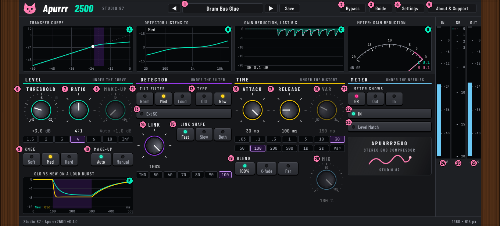
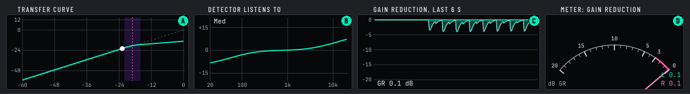
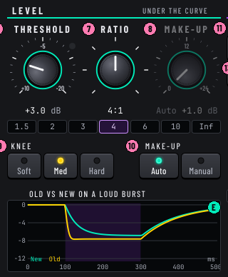
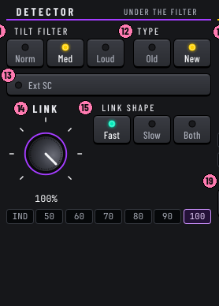
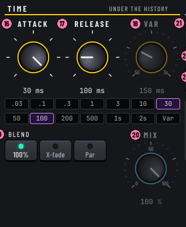
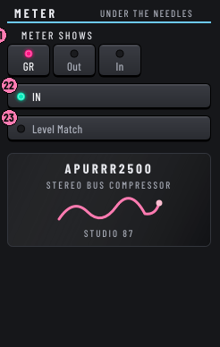

Apurrr2500
Manual for version 0.1.0. Studio 87. Free and open source (AGPL-3.0-or-later). Collects nothing, never uses the network.
A stereo bus compressor in the style of a classic hardware bus compressor. Our own code, written from public descriptions; no code, names or artwork from any hardware maker.

Quick start
- Put Apurrr2500 on a bus. The first preset, Start Here, is 2:1, attack 10 ms, release 200 ms.
- Lower Threshold (turn it right) until the GR meter shows 2 to 4 dB on the loud parts.
- Compare with IN (I) and use Level Match so a louder sound does not fool you.
- For parallel compression use Blend Par and Mix around 40 to 60. For a kick duck, route the kick to the side-chain input, set Type to New and turn Ext SC on.
Signal flow in one line: input, (Tilt filter and Type decide what the detector hears), gain reduction, Make-up, Blend with the untouched sound, Bypass crossfade, output.
Interface tour
Pink numbers are controls, mint letters are displays. The picture is the compiled plugin window.
Header
Displays

| A | Transfer curve | Input level across (-60 to 0 dB), output level up (-60 to +12 dB). White dashed line is 1:1, the mint line is your compression curve, the purple band is the knee, the pink dashed line is the threshold. The white dot is the live signal. | ||
|---|---|---|---|---|
| B | Detector filter | How the detector hears each frequency, 20 Hz to 20 kHz, -20 to +20 dB. Flat for Norm; lows count less and highs more for Med and Loud. | ||
| C | Gain reduction history | The last six seconds of gain reduction, 0 to 20 dB, hanging from the top. Mint filled is left, pink dashed is right. | ||
| D | Needle meter | Two needles, mint left and pink right. GR mode reads 0 to 20 dB with 0 at the right. Out and In modes read VU, -20 to +3, with 0 VU at -18 dBFS by default (Settings can change it). | ||
| E | Old vs New | A built-in test: 1 kHz at -34 dB, a loud burst from 100 to 300 ms, then quiet again, run through your settings by the real compressor code. Mint is New, yellow is Old. It shows the gain reduction over half a second, in dB. | ||
Level

Detector

Time

Meter and meters

Every control
| # | Control | What it does | Range | Default |
|---|---|---|---|---|
| 1 | Preset bar | Arrows step through presets. The name opens the preset browser (search, type chips, load, export, rename, delete). Double-click the name to rename your own preset. Save stores the settings as your own preset and asks before overwriting. | arrows, name, Save | Start Here |
| 2 | Bypass | Bypass: hear the dry signal to compare with the compressed sound (B). The meters keep moving. | on / off | off |
| 3 | Guide | Short guide and keyboard shortcuts. | ||
| 4 | Settings | Info bubbles, power saving, colour look, needle meter. | ||
| 5 | About & Support | About Apurrr2500, support and where your files live. | ||
| 6 | Threshold | Threshold: the level where the compressor starts turning the sound down. Try: lower it (turn right) until the gain reduction meter shows 2 to 4 dB on the loud parts. Range +10 to -20 dBu; 0 dBu is -22 dBFS here. The lamp beside the knob lights while the sound is over the threshold. | +10 to -20 dBu (0 dBu = -22 dBFS) | +4 dBu |
| 7 | Ratio | Ratio: how hard the sound over the threshold is pushed down. Try: 1.5 or 2 for glue on a whole mix, 4 for drums, 10 or Inf to catch peaks like a limiter. The row of small buttons under the knobs jumps straight to a step. | 1.5, 2, 3, 4, 6, 10, Inf : 1 | 2:1 |
| 8 | Make-up | Make-up: brings the level back up after compression, 0 to +24 dB, on Manual. On Auto it follows Threshold and Ratio. Try: use Level Match to compare fairly, because louder always sounds better. | 0 to +24 dB (Manual) | Auto |
| 9 | Knee | Soft: Soft knee: compression fades in gradually, so it is hard to hear. Try: Soft for glue on a full mix. Med: Medium knee: compression fades in a little. Try: Med as a safe middle for most buses. Hard: Hard knee: compression starts sharply at the threshold, so it is punchier and easier to hear. Try: Hard for drums and peak catching. | Soft 12 dB, Med 6 dB, Hard 0.5 dB | Med |
| 10 | Make-up | Auto: Auto make-up: the level comes back up by itself, based on Threshold and Ratio. Try: leave on Auto while you find the settings. Manual: Manual make-up: you set the gain with the Make-up knob. Try: switch here when you want exact control. In Old type the detector hears the make-up too. | Auto, Manual | Auto |
| 11 | Tilt filter | Norm: Norm: the detector hears all frequencies equally, like a normal compressor. Try: start here. Med: Med: the detector hears less bass and more treble, and the mids stay flat from 200 Hz to 3 kHz. Try: Med on a drum bus so the kick pumps the mix less. Loud: Loud: a steady tilt, 15 dB less at 20 Hz and 15 dB more at 20 kHz (3 dB per octave). It only changes what the compressor listens to, not your sound. Try: Loud on a full mix to stop the bass from pumping everything. | Norm, Med, Loud | Norm |
| 12 | Type | Old: Old: the detector listens to the sound after compression. In our measurement it grips the first instant of a sudden hit a little harder, then eases off gently. Try: Old for glue and warmth. See the Old vs New display. New: New: the detector listens to the sound before compression, so it always judges the untouched sound. Steady and exact. Try: New for drums and tight control. Needed for Ext SC. | Old, New | New |
| 13 | Ext SC | Ext SC: the detector listens to another track, such as a kick, instead of this sound. It only works in Type New. Try: duck a bass or pad from the kick. This preview uses a built-in kick. | on / off | off |
| 14 | Link | Link: how much the left and right channels share their gain reduction. IND keeps them apart; 100% turns both down together so the stereo image stays steady. Try: 100% for a mix, 50 to 70% for wide material. The row of small buttons under it jumps to a step. | IND, 50 to 100 % | 100 % |
| 15 | Link shape | Fast: Fast: the other channel's reduction arrives at once, so peaks link quickly. Try: Fast for a tight stereo image. Slow: Slow: the other channel's reduction arrives gradually, so only longer swells link. Try: Slow for a livelier, wider sound. Both: Both: the linking is even slower and very subtle. Try: Both with a Link of 50 to 70% for gentle width. | Fast, Slow, Both | Fast |
| 16 | Attack | Attack: how fast the compressor grabs the sound, 0.03 ms (instant) to 30 ms (slow). Try: 10 or 30 ms keeps the punch of drums; 1 ms or less to tame sharp peaks. | 0.03 to 30 ms, 7 steps | 10 ms |
| 17 | Release | Release: how long the compressor takes to let go, 50 ms to 2 s. The last step, Var, uses the Var knob. Try: 100 to 200 ms so it breathes with the beat; longer for a smooth, slow glue. | 50 ms to 2 s, or Var | 200 ms |
| 18 | Var | Var: a smooth release time from 50 ms to 3 s. It only works when Release is on the Var step. Try: set it to match the tempo, about 150 ms at 140 BPM. | 50 ms to 3 s (log) | 150 ms |
| 19 | Blend | 100%: 100%: all of the sound is compressed and Mix is not used. Try: start here. X-fade: X-fade: Mix fades from the untouched sound (0) to the compressed sound (100). Try: 50 to hear both together without getting louder. Par: Par: the compressed sound is added on top of the untouched sound (louder). It keeps the punch and adds weight. Try: a hard squash (Ratio 6 or more, Soft knee) with Mix near 50 to 60. | 100 %, X-fade, Par | 100 % |
| 20 | Mix | Mix: how much compressed sound is blended in. Its meaning depends on Blend, and it does nothing when Blend is 100%. Try: Par with Mix around 40 to 60 for parallel compression. | 0 to 100 % | 100 % |
| 21 | Meter shows | GR: GR: shows how many dB the compressor is turning the sound down, 0 at the right. Try: aim for 2 to 4 dB of movement on a mix bus. Out: Out: shows the output level in dB (0 VU is -18 dBFS). Try: watch it when matching the level with and without compression. In: In: shows the input level in dB (0 VU is -18 dBFS). Try: check that the sound is not too quiet for the Threshold to catch. | GR, Out, In | GR |
| 22 | IN | IN: turns the compression on or off with no click, while the sound keeps passing. Try: flick it while listening to hear what the compressor adds. (Bypass in the header switches off the whole plugin.) | on / off | on |
| 23 | Level Match | Level Match: slowly changes the output so the compressed sound is as loud as the untouched sound, for a fair comparison. Try: turn it on while you compare with IN, then off. | on / off | off |
| 24 | In meter | Input level meter in dB. Blue is safe, purple is the warning zone, pink is clipping. Click to clear the clip light. | -60 to +6 dB | |
| 25 | GR meter | Gain reduction meter in dB, left and right. It hangs from the top: the longer the bar, the more the signal is turned down. | 0 to 20 dB | |
| 26 | Out meter | Output level meter in dB. Blue is safe, purple is the warning zone, pink is clipping. Click to clear the clip light. | -60 to +6 dB |
Meters: the In and Out strips read peak level, -60 to +6 dB (blue to -12, purple to 0, pink above; click to clear the clip marker). Numbers under the strips are the peak read-outs in dB.
Presets
16 factory presets are built in. Your own presets are plain text files:
- Linux:
~/.local/share/Studio 87/Apurrr2500/presets - Windows:
%APPDATA%\Studio 87\Apurrr2500\presets - macOS:
~/Library/Application Support/Studio 87/Apurrr2500/presets
Export and Import in the browser use plain text you can paste anywhere; anything invalid is refused. A preset does not change Bypass, Level Match or the meter choice. The window size, look, bubbles and needle settings are saved with the project, not with presets.
| Start Here | Mix |
|---|---|
| Drum Bus Glue | Drum |
| Drum Smash Parallel | Drum |
| Mix Bus Glue | Mix |
| Hard Dance Master Glue | Master |
| Kick Duck Ext SC | Synth |
| Bass Bus Tight | Bass |
| Vocal Bus Smooth | Vocal |
| Synth Bus Control | Synth |
| Snare Snap | Drum |
| Slow Squeeze | Mix |
| Peak Catch | Master |
| Old Feedback Warmth | Mix |
| Bright Lift | FX |
| Loose Link Glue | Mix |
| Gentle Parallel Lift | Mix |
Keyboard and mouse
| B | Bypass |
| I | IN on or off |
| K T Y M | Next knee, tilt, type (Old or New), meter |
| R / Shift+R | Next or previous ratio |
| Knobs | Drag, wheel, arrows; Shift for fine steps on smooth knobs; double-click resets |
| Window | Drag any edge or corner (proportions stay). Double-click the wood to return to 100 %. |
Hover any control for about a second for an info bubble (Settings can turn bubbles off). Keys work while the plugin window has focus; some hosts keep the focus.
Install and uninstall
- Windows: run the installer; it puts the VST3 in the common VST3 folder. Remove it from Settings, Apps. It asks before touching your presets.
- macOS: open the .pkg; use "Uninstall Apurrr2500" in Applications to remove it.
- Linux: Flatpak DAWs:
flatpak install --userthe .flatpak file. Native DAWs: unpack the tarball into~/.vst3.
Under the hood
Measured in plain C++ tests (the same core code the plugin runs):
- Static curve: measured gain reduction on a -10 dBFS RMS sine matches the curve within 0.1 dB (2:1 gives 6.05 dB, 4:1 gives 9.08 dB).
- Latency: 0 samples. No look-ahead and no oversampling. Parameter changes act within one sample; smoothing is 10 ms on threshold, ratio, knee and mix, 8 ms on IN.
- Timing: with a 1 ms attack the reduction reaches 63 percent after 3.3 ms; a 200 ms release falls to 37 percent after 202 ms.
- Stability: all 126 combinations of the switches survive silence, DC, full scale, NaN and Inf and return to silence.
- Distortion plus aliasing, Inf ratio, fastest attack, 0.9 amplitude sine: -87 dB at 1 kHz, -120 dB at 9 and 15 kHz. At 100 Hz it is -48 dB: with the fastest attack the gain follows the waveform, which is the compressor acting as a distorter, not aliasing.
- CPU: 10 seconds of stereo took 1.8 percent of one core on the test machine. Sample rates 44.1 to 192 kHz all work.
- Level Match brings the output within 0.01 dB of the input level after 10 s in the test. Bypass and IN off are bit exact.
- The core produces the same gain reduction as the approved mockup's own engine on four test scenarios (difference 0.000 dB).
Old and New. Old listens after the gain stage (a feedback design), New before it. An earlier mockup text said Old lets a sudden hit through for a moment; the measurement does not show that, so the text now follows it. In our measurement with a 0.3 ms attack, 0.7 ms into a burst New has reduced 2.2 dB while Old has reduced 6.8 dB, and both settle to 9.08 dB. So Old reacts faster at the very start here, and the info bubble text is a design decision still to be reviewed (see ROADMAP).
Not verified: the level calibration (0 dBu = -22 dBFS, needle 0 VU = -18 dBFS) comes from the design and has not been compared with a real hardware unit. The installers and the plugin have not been tried on real Windows or macOS machines or in every DAW. Compression feel and sound have not been judged by ear against any other compressor.
Licence and thanks
AGPL-3.0-or-later. Built with JUCE (AGPLv3). Fonts: Barlow Condensed and JetBrains Mono, SIL Open Font Licence 1.1. Source: github.com/SpeakingColors/apurrr2500. Optional support: ko-fi.com/studio87.